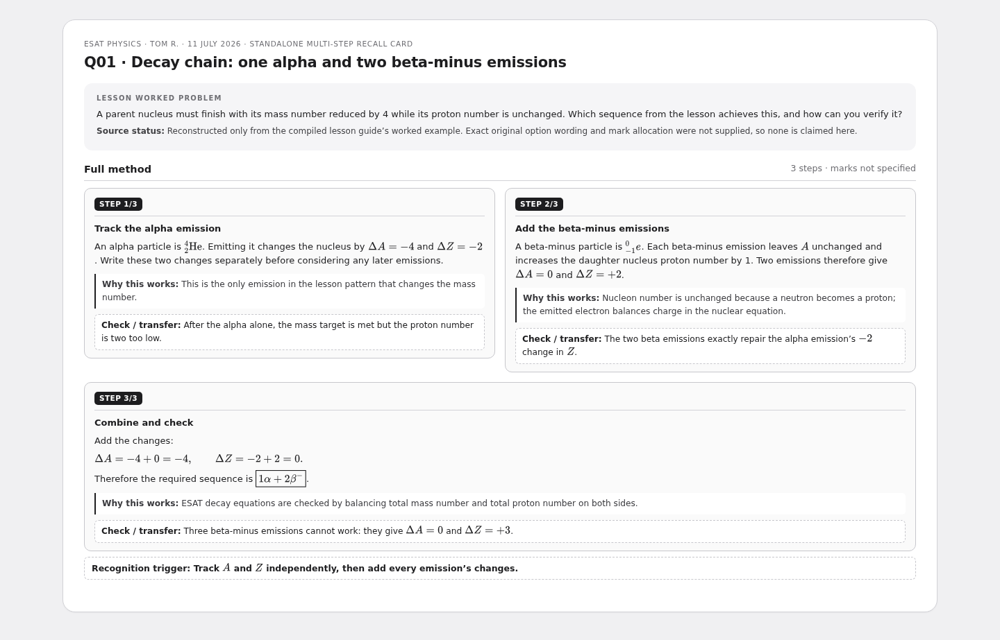
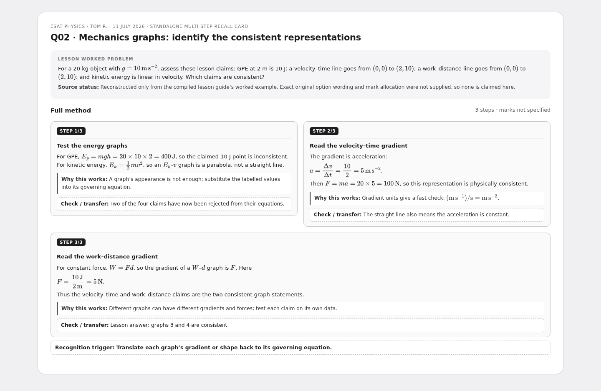
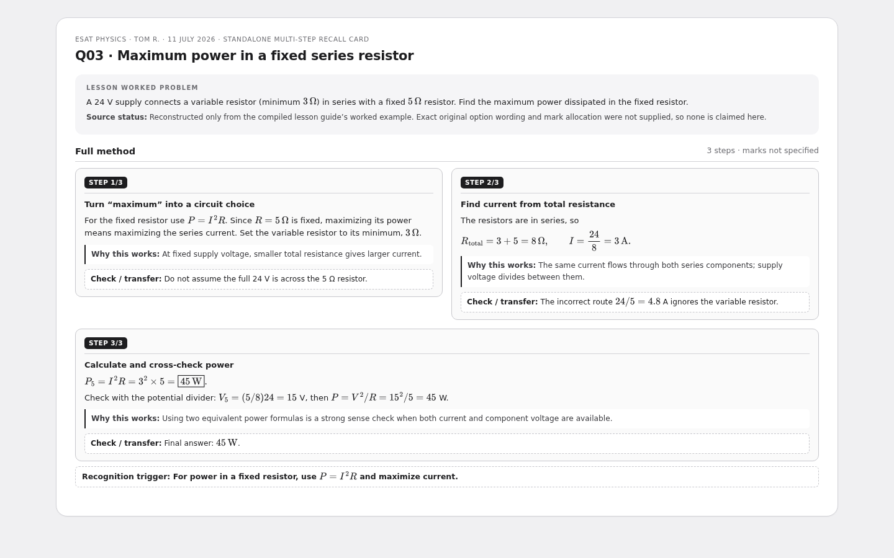
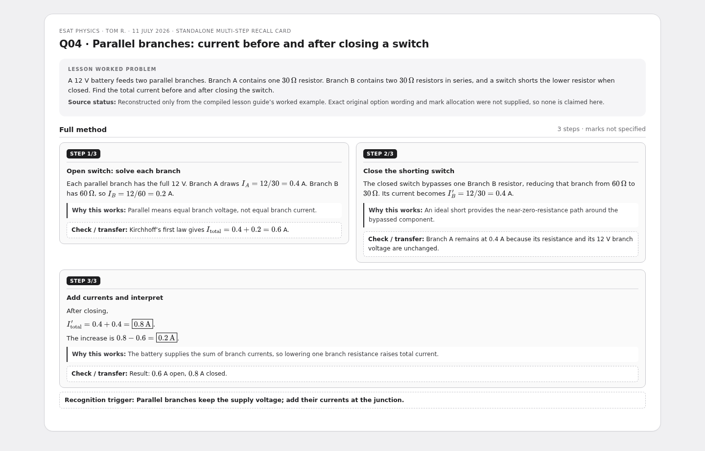
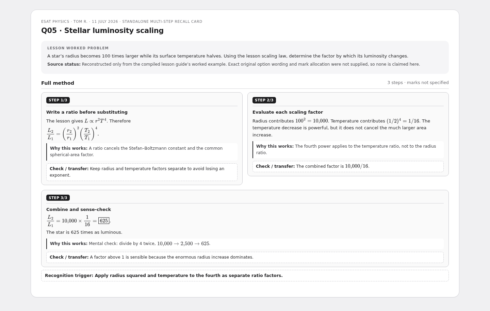
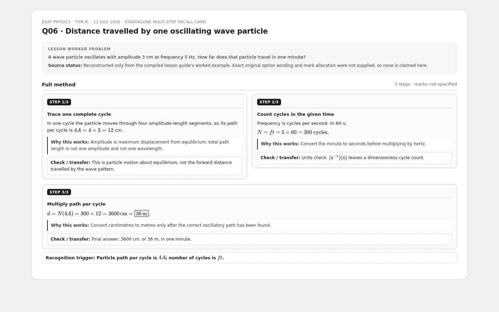
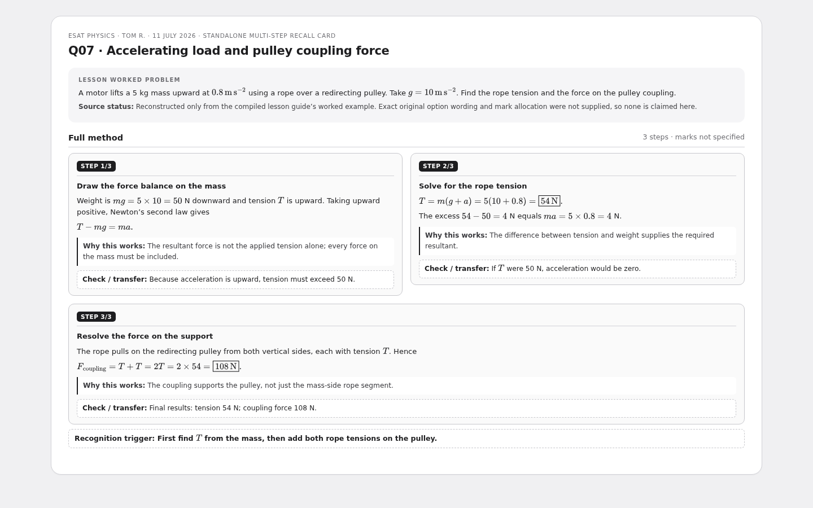

ESAT Physics — multi-step recall cards
Tom R. · PMT Education · 11 July 2026. Seven genuine worked problems reconstructed strictly from the compiled lesson guide; no original mark scheme or option wording is claimed.
7 cardsESAT PhysicsMulti-step
Q01 · Decay chain: one alpha and two beta-minus emissions

Q02 · Mechanics graphs: identify the consistent representations

Q03 · Maximum power in a fixed series resistor

Q04 · Parallel branches: current before and after closing a switch

Q05 · Stellar luminosity scaling

Q06 · Distance travelled by one oscillating wave particle

Q07 · Accelerating load and pulley coupling force
